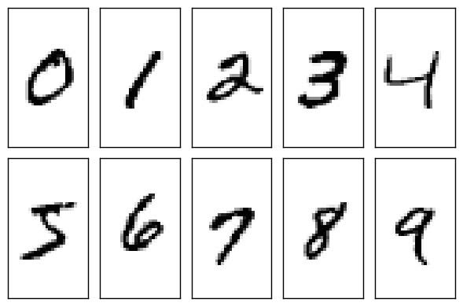
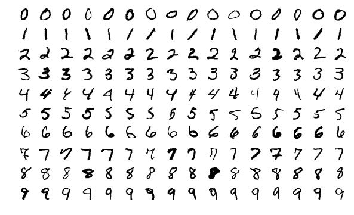
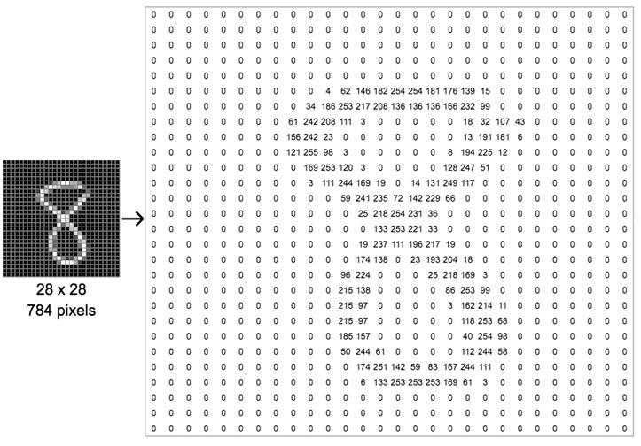
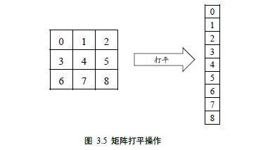
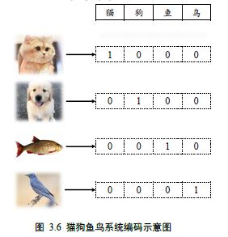
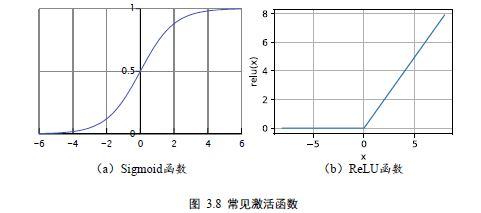
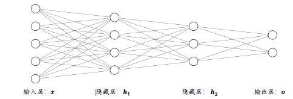

手写数字图片数据集
机器学习需要从数据中间学习，首先我们需要采集大量的真实样本数据。以手写的数字图片识别为例，如图所示，我们需要收集大量的由真人书写的0~9 的数字图片，为了便于存储和计算，一般把收集的原始图片缩放到某个固定的大小(Size 或Shape)，比如224 个像素的行和224 个像素的列(224 × 224)，或者96 个像素的行和96 个像素的列(96 × 96)，这张图片将作为输入数据x。同时，我们需要给每一张图片标注一个标签(Label)，它将作为图片的真实值𝑦，这个标签表明这张图片属于哪一个具体的类别，一般通过映射方式将类别名一一对应到从0 开始编号的数字，比如说硬币的正反面，我们可以用0 来表示硬币的反面，用1 来表示硬币的正面，当然也可以反过来1 表示硬币的反面，这种编码方式叫作数字编码(Number Encoding)。对于手写数字图片识别问题，编码更为直观，我们用数字的0~9 来表示类别名字为0~9 的图片。
如果希望模型能够在新样本上也能具有良好的表现，即模型泛化能力(Generalization Ability)较好，那么我们应该尽可能多地增加数据集的规模和多样性(Variance)，使得我们用于学习的训练数据集与真实的手写数字图片的分布(Ground-truth Distribution)尽可能的逼近，这样在训练数据集上面学到了模型能够很好的用于未见过的手写数字图片的预测。
为了方便业界统一测试和评估算法， (Lecun, Bottou, Bengio, & Haffner, 1998)发布了手写数字图片数据集，命名为MNIST，它包含了0~9 共10 种数字的手写图片，每种数字一共有7000 张图片，采集自不同书写风格的真实手写图片，一共70000 张图片。其中60000张图片作为训练集𝔻train(Training Set)，用来训练模型，剩下10000 张图片作为测试集𝔻test(Test Set)，用来预测或者测试，训练集和测试集共同组成了整个MNIST 数据集。
考虑到手写数字图片包含的信息比较简单，每张图片均被缩放到28 × 28的大小，同时只保留了灰度信息，如图所示。这些图片由真人书写，包含了如字体大小、书写风格、粗细等丰富的样式，确保这些图片的分布与真实的手写数字图片的分布尽可能的接近，从而保证了模型的泛化能力。
现在我们来看下图片的表示方法。一张图片包含了ℎ行(Height/Row)，𝑤列(Width/Column)，每个位置保存了像素(Pixel)值，像素值一般使用0~255 的整形数值来表达颜色强度信息，例如0 表示强度最低，255 表示强度最高。如果是彩色图片，则每个像素点包含了R、G、B 三个通道的强度信息，分别代表红色通道、绿色通道、蓝色通道的颜色强度，所以与灰度图片不同，它的每个像素点使用一个1 维、长度为3 的向量(Vector)来表示，向量的3 个元素依次代表了当前像素点上面的R、G、B 颜色强值，因此彩色图片需要保存为形状是[ℎ, 𝑤, 3]的张量(Tensor，可以通俗地理解为3 维数组)。如果是灰度图片，则使用一个数值来表示灰度强度，例如0 表示纯黑，255 表示纯白，因此它只需要一个形状为[ℎ, 𝑤]的二维矩阵(Matrix)来表示一张图片信息(也可以保存为[ℎ, 𝑤, 1]形状的张量)。图 3.3 演示了内容为8 的数字图片的矩阵内容，可以看到，图片中黑色的像素用0 表示，灰度信息用0~255 表示，图片中灰度越白的像素点，对应矩阵位置中数值也就越大。
目前常用的深度学习框架，如TensorFlow，PyTorch 等，都可以非常方便的通过数行代码自动下载、管理和加载MNIST 数据集，不需要我们额外编写代码，使用起来非常方便。我们这里利用TensorFlow 自动在线下载MNIST 数据集，并转换为Numpy 数组格式：
1 | import os |
load_data()函数返回两个元组(tuple)对象，第一个是训练集，第二个是测试集，每个tuple的第一个元素是多个训练图片数据X，第二个元素是训练图片对应的类别数字Y。其中训练集X的大小为(60000,28,28)，代表了60000 个样本，每个样本由28 行、28 列构成，由于是灰度图片，故没有RGB 通道；训练集Y的大小为(60000,),one-hot后为(60000,10)，代表了这60000 个样本的标签数字，每个样本标签用一个0~9 的数字表示。测试集X 的大小为(10000,28,28)，代表了10000 张测试图片，Y 的大小为(10000,)。
TensorFlow中加载的MNIST 数据图片，数值的范围在[0,255]之间。在机器学习中间，一般希望数据的范围在0 周围小范围内分布。通过预处理步骤，我们把[0,255]像素范围归一化(Normalize)到[0,1. ]区间，再缩放到[−1,1]区间，从而有利于模型的训练。
每一张图片的计算流程是通用的，我们在计算的过程中可以一次进行多张图片的计算，充分利用CPU 或GPU 的并行计算能力。一张图片我们用shape 为[h, w]的矩阵来表示，对于多张图片来说，我们在前面添加一个数量维度(Dimension)，使用shape 为[𝑏, ℎ, 𝑤]的张量来表示，其中的𝑏代表了batch size(批量)；多张彩色图片可以使用shape 为[𝑏, ℎ, 𝑤, 𝑐]的张量来表示，其中的𝑐表示通道数量(Channel)，彩色图片𝑐 = 3。通过TensorFlow 的Dataset 对象可以方便完成模型的批量训练，只需要调用batch()函数即可构建带batch 功能的数据集对象。
数据预处理
考虑输入格式，一张图片𝒙使用矩阵方式存储，shape 为：[ℎ, 𝑤]，𝑏张图片使用shape为[𝑏, ℎ, 𝑤]的张量X 存储。而我们模型只能接受向量形式的输入特征向量，因此需要将[ℎ, 𝑤]的矩阵形式图片特征平铺成[ℎ ∗ 𝑤]长度的向量，如图 所示，其中输入特征的长度𝑑𝑖𝑛 = ℎ ∗ 𝑤。
对于输出标签，前面我们已经介绍了数字编码，它可以用一个数字来表示便签信息，例如数字1 表示猫，数字3 表示鱼等。但是数字编码一个最大的问题是，数字之间存在天然的大小关系，比如1 < 2 < 3，如果1、2、3 分别对应的标签是猫、狗、鱼，他们之间并没有大小关系，所以采用数字编码的时候会迫使模型去学习到这种不必要的约束。
那么怎么解决这个问题呢？可以将输出设置为𝑑𝑜𝑢𝑡个输出节点的向量，𝑑𝑜𝑢𝑡与类别数相同，让第𝑖 ∈ [1, 𝑑𝑜𝑢𝑡]个输出值表示当前样本属于类别𝑖的概率𝑃(𝑥属于类别𝑖|𝑥)。我们只考虑输入图片只输入一个类别的情况，此时输入图片的真实的标注已经明确：如果物体属于第𝑖类的话，那么索引为𝑖的位置上设置为1，其他位置设置为0，我们把这种编码方式叫做one-hot 编码(独热编码)。以图 3.6 中的“猫狗鱼鸟”识别系统为例，所有的样本只属于“猫狗鱼鸟”4 个类别中其一，我们将第1,2,3,4号索引位置分别表示猫狗鱼鸟的类别，对于所有猫的图片，它的数字编码为0，One-hot 编码为[1,0,0,0]；对于所有狗的图片，它的数字编码为1，One-hot 编码为[0,1,0,0]，以此类推。
写数字图片的总类别数有10 种，即输出节点数𝑑𝑜𝑢𝑡 = 10，那么对于某个样本，假设它属于类别𝑖，即图片的中数字为𝑖，只需要一个长度为10 的向量𝐲，向量𝐲的索引号为𝑖的元素设置为1，其他位为0。比如图片0 的One-hot 编码为[1,0,0, … ,0]，图片2 的Onehot编码为[0,0,1, … ,0]，图片9 的One-hot 编码为[0,0,0, … ,1]。One-hot 编码是非常稀疏(Sparse)的，相对于数字编码来说，占用较多的存储空间，所以一般在存储时还是采用数字编码，在计算时，根据需要来把数字编码转换成One-hot 编码，通过tf.one_hot 即可实现：
1 | y = tf.constant([0,1,2,3]) # 数字编码 |
输出：Tensor(
[[1. 0. 0. 0. 0. 0. 0. 0. 0. 0.]
[0. 1. 0. 0. 0. 0. 0. 0. 0. 0.]
[0. 0. 1. 0. 0. 0. 0. 0. 0. 0.]
[0. 0. 0. 1. 0. 0. 0. 0. 0. 0.]], shape=(4, 10), dtype=float32)
误差计算
模型的训练目标是通过优化损失函数ℒ来找到最优数值解W∗, 𝒃∗: W∗, 𝒃∗ = 𝑎𝑟𝑔𝑚𝑖𝑛ℒ(𝒚_gt , 𝒚)。
对于分类问题的误差计算来说，更常见的是采用交叉熵(Cross entropy)损失函数，而不是采用回归问题中介绍的均方差损失函数。
激活函数
既然线性模型不可行，我们可以给线性模型嵌套一个非线性函数，即可将其转换为非线性模型。我们把这个非线性函数称为激活函数(Activation function)，用𝜎表示： 𝜎(𝑾𝒙 + 𝒃)。这里的𝜎代表了某个具体的非线性激活函数，比如Sigmoid 函数(图 3.8(a))，ReLU 函数(图3.8(b))。
表达能力
针对于模型的表达能力偏弱的问题，可以通过重复堆叠多次变换来增加其表达能力：
𝒉𝟏 = 𝑅𝑒𝐿𝑈(𝑾𝟏𝒙 + 𝒃𝟏)
𝒉𝟐 = 𝑅𝑒𝐿𝑈(𝑾𝟐𝒉𝟏 + 𝒃𝟐)
output= 𝑾𝟑𝒉𝟐 + 𝒃𝟑
把第一层神经元的输出值𝒉𝟏作为第二层神经元模型的输入，把第二层神经元的输出𝒉𝟐作为第三层神经元的输入，最后一层神经元的输出作为模型的输出 output。
从网络结构上看，如图 3.9 所示，函数的嵌套表现为网络层的前后相连，每堆叠一个(非)线性环节，网络层数增加一层。我们把数据节点所在的层叫做输入层，每一个非线性模块的输出𝒉𝒊连同它的网络层参数𝑾𝒊和𝒃𝒊称为一层网络层，特别地，对于网络中间的层，叫做隐藏层，最后一层叫做输出层。这种由大量神经元模型连接形成的网络结构称为(前馈)神经网络(Neural Network)。
优化方法
当网络层数增加、数据特征长度增大、添加复杂的非线性函数之后，模型的表达式将变得非常复杂，很难手动推导出梯度的计算公式；而且一旦网络结构发生变动，网络的函数模型也随之发生改变，依赖人工去计算梯度的方式显然不可行。
这个时候就是深度学习框架发明的意义所在，借助于自动求导(Autograd)技术，深度学习框架在计算函数的损失函数的过程中，会记录模型的计算图模型，并自动完成任意参数𝜃的偏导分𝜕ℒ/𝜕𝜃的计算，用户只需要搭建出网络结构，梯度将自动完成计算和更新，使用起来非常便捷高效。
手写数字图片识别体验
感性认识，不重在代码细节。
1 | import tensorflow as tf |
输出：
1 | 0 loss: 2.0800621509552 acc: 0.125 |